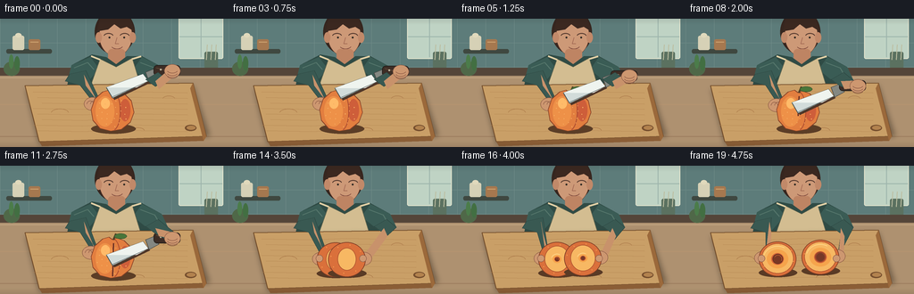
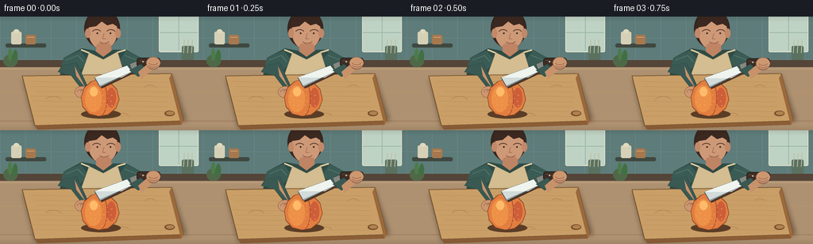
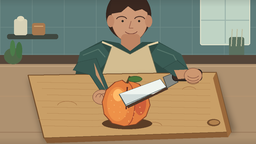
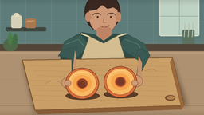

CODING AGENTS AS PIXEL WORLD MODELS
traex/GPT-5.6-Sol · motion_rationality_0020
点击播放 · 原生 RGB 像素
逐轮保存的候选
回放视频、检查图与代码变化。
每份候选均可单独播放。实际图片检查记录在下方工具轨迹中。
候选 01播放与检查图
点击播放 · 原生 RGB 像素


展开代码变化
--- 上一保存版本
+++ 本次保存版本
@@ -0,0 +1,278 @@
+from pathlib import Path
+import json, math
+import numpy as np
+from PIL import Image, ImageDraw, ImageFilter
+import artifact_io
+
+CASE_DIR = Path(__file__).resolve().parent
+SPEC = json.loads((CASE_DIR / 'task_spec.json').read_text())
+W, H, N = SPEC['width'], SPEC['height'], SPEC['frames']
+S = 4
+rng = np.random.default_rng(20)
+
+
+def sc(v): return int(round(v*S))
+def box(b): return tuple(sc(v) for v in b)
+def pts(p): return [(sc(x), sc(y)) for x,y in p]
+def ease(t):
+ t=max(0,min(1,t)); return t*t*(3-2*t)
+def lerp(a,b,t): return a+(b-a)*t
+
+def ellipse(d,b,fill,outline=None,width=1):
+ d.ellipse(box(b), fill=fill, outline=outline, width=sc(width) if outline else 1)
+def poly(d,p,fill,outline=None,width=1):
+ d.polygon(pts(p),fill=fill)
+ if outline: d.line(pts(p+[p[0]]),fill=outline,width=sc(width),joint='curve')
+def line(d,p,fill,width=1,joint='curve'):
+ d.line(pts(p),fill=fill,width=sc(width),joint=joint)
+def rr(d,b,r,fill,outline=None,width=1):
+ d.rounded_rectangle(box(b),radius=sc(r),fill=fill,outline=outline,width=sc(width))
+def arc(d,b,start,end,fill,width=1):
+ d.arc(box(b),start=start,end=end,fill=fill,width=sc(width))
+
+def gradient_bg():
+ h,w=H*S,W*S
+ y=np.linspace(0,1,h)[:,None,None]
+ top=np.array([73,105,105])[None,None,:]
+ bot=np.array([207,190,159])[None,None,:]
+ arr=np.tile((top*(1-y)+bot*y),(1,w,1))
+ # warm light from upper right
+ xx,yy=np.meshgrid(np.arange(w),np.arange(h))
+ glow=np.exp(-(((xx-0.80*w)/(0.44*w))**2+((yy-0.14*h)/(0.44*h))**2))*17
+ arr += glow[...,None]
+ return Image.fromarray(np.uint8(np.clip(arr,0,255)),'RGB')
+
+def shadow_layer(im, shapes, blur=3, opacity=90):
+ la=Image.new('RGBA',im.size,(0,0,0,0)); d=ImageDraw.Draw(la)
+ for kind,data in shapes:
+ if kind=='ellipse': d.ellipse(box(data),fill=(22,16,11,opacity))
+ else: d.polygon(pts(data),fill=(22,16,11,opacity))
+ la=la.filter(ImageFilter.GaussianBlur(sc(blur)))
+ im.paste(la,(0,0),la)
+
+def draw_background(im,d):
+ # tiled backsplash and cabinets
+ d.rectangle(box((0,0,256,55)), fill=(93,124,122))
+ for x in range(0,257,32): line(d,[(x,0),(x,55)],(111,139,135),0.45)
+ for y in [27,54]: line(d,[(0,y),(256,y)],(111,139,135),0.45)
+ # soft window/light block
+ rr(d,(200,-6,250,45),2,(191,211,196), (224,226,204),1)
+ line(d,[(225,0),(225,43)],(157,181,172),1)
+ line(d,[(201,20),(249,20)],(157,181,172),1)
+ # shelves and small kitchen objects
+ rr(d,(7,34,58,39),2,(63,72,64))
+ rr(d,(14,19,27,35),2,(214,209,182)); ellipse(d,(17,16,24,21),(224,217,188))
+ rr(d,(32,23,45,35),2,(166,120,79)); line(d,[(34,26),(43,26)],(207,163,112),1)
+ rr(d,(229,37,244,59),2,(91,113,96));
+ for x in [232,237,242]: line(d,[(x,29),(x-1,46)],(188,190,161),1)
+ # countertop back lip and plane
+ d.rectangle(box((0,55,256,65)),fill=(84,69,57))
+ d.rectangle(box((0,64,256,144)),fill=(174,145,112))
+ # counter gradient stripes
+ for y,c in [(66,(193,164,129)),(96,(180,147,112)),(132,(158,126,95))]:
+ line(d,[(0,y),(256,y)],c,1)
+ # blurred decor on left
+ ellipse(d,(4,48,22,64),(79,104,72)); ellipse(d,(10,40,15,56),(75,124,74)); ellipse(d,(16,42,22,58),(66,111,66))
+
+def draw_person(im,d,frame):
+ # back-of-scene person, clearly observing the cut
+ # hair and head
+ ellipse(d,(106,-10,151,40),(54,38,31))
+ ellipse(d,(111,-5,148,42),(205,153,119), (116,76,57),0.6)
+ # ears
+ ellipse(d,(107,15,114,27),(193,137,105)); ellipse(d,(145,15,152,27),(193,137,105))
+ # hair cap and locks
+ poly(d,[(109,14),(112,0),(145,-3),(150,14),(142,9),(135,11),(128,6),(121,12)],(59,40,32))
+ # face details looking down
+ arc(d,(116,16,127,23),190,345,(82,56,45),1)
+ arc(d,(134,16,145,23),195,350,(82,56,45),1)
+ ellipse(d,(121.5,20,123.5,22),(48,42,37)); ellipse(d,(138,20,140,22),(48,42,37))
+ line(d,[(131,21),(129,28),(133,28)],(161,104,82),0.7)
+ arc(d,(124,25,138,34),25,150,(126,73,61),0.8)
+ # neck and shirt/torso
+ rr(d,(121,34,140,52),4,(190,132,99))
+ poly(d,[(80,52),(103,40),(119,43),(130,51),(142,42),(159,42),(181,54),(188,96),(71,96)],(47,75,69))
+ # sleeves with highlights
+ poly(d,[(80,52),(101,43),(111,56),(97,72),(76,68)],(58,92,85))
+ poly(d,[(159,43),(181,54),(188,69),(169,73),(149,57)],(58,92,85))
+ line(d,[(83,55),(98,49),(105,57)],(86,119,108),1)
+ line(d,[(157,49),(173,55),(180,67)],(86,119,108),1)
+ # apron
+ poly(d,[(112,45),(130,54),(148,44),(164,96),(94,96)],(211,189,145),(91,98,77),0.7)
+ line(d,[(112,46),(102,42)],(226,208,166),2)
+ line(d,[(148,45),(158,42)],(226,208,166),2)
+ rr(d,(107,74,151,96),5,(190,164,121),(142,116,82),0.6)
+ arc(d,(116,69,142,82),0,180,(142,116,82),0.7)
+
+def draw_board(im,d):
+ shadow_layer(im,[('poly',[(29,79),(216,75),(235,132),(44,141)])],3,100)
+ poly(d,[(28,75),(216,72),(231,132),(44,138)],(201,159,103),(113,76,42),1)
+ # bevel
+ poly(d,[(44,138),(231,132),(228,137),(47,143)],(139,94,54))
+ poly(d,[(216,72),(231,132),(228,137),(213,78)],(155,105,59))
+ # wood grain
+ for k in range(8):
+ y=82+k*6.2
+ x0=37+(k%3)*5
+ line(d,[(x0,y),(92,y+1),(132,y-0.5),(210,y+1)],(177,129,78),0.5)
+ for x,y,r in [(67,106,10),(189,90,7),(154,126,8)]:
+ arc(d,(x-r,y-r/2,x+r,y+r/2),190,350,(167,116,69),0.45)
+ # handle hole
+ ellipse(d,(207,119,220,126),(118,79,46)); ellipse(d,(209,120,219,124.5),(178,130,78))
+
+def skin_tone(shade=0):
+ return (max(0,205+shade),max(0,151+shade),max(0,112+shade))
+
+def draw_arm_and_hand(d, side, handx, handy, grip=False, openhand=False):
+ if side=='left':
+ # sleeve-to-wrist diagonal
+ poly(d,[(78,62),(96,58),(handx+8,handy-7),(handx+5,handy+2),(90,75),(73,70)],(57,89,82),(43,68,63),0.6)
+ poly(d,[(94,63),(handx+5,handy-6),(handx+10,handy+1),(96,75)],skin_tone(-5))
+ ellipse(d,(handx-8,handy-7,handx+11,handy+8),skin_tone(),(133,85,66),0.6)
+ if openhand:
+ for j,dy in enumerate([-4,-1.5,1,3.5]):
+ rr(d,(handx+4,handy+dy-1.4,handx+14-j*.7,handy+dy+1.2),1.2,skin_tone(3),(134,87,67),0.4)
+ else:
+ # curled fingers resting on fruit
+ for j in range(3):
+ arc(d,(handx-5+j*4,handy-3,handx+3+j*4,handy+6),190,350,(129,79,61),0.55)
+ else:
+ poly(d,[(177,60),(188,69),(handx+5,handy-5),(handx+1,handy+6),(174,76),(163,68)],(57,89,82),(43,68,63),0.6)
+ poly(d,[(174,70),(handx+3,handy-6),(handx+8,handy+2),(178,79)],skin_tone(-5))
+ ellipse(d,(handx-8,handy-7,handx+10,handy+8),skin_tone(),(133,85,66),0.6)
+ if openhand:
+ for j,dy in enumerate([-4,-1.5,1,3.5]):
+ rr(d,(handx-14+j*.7,handy+dy-1.4,handx-3,handy+dy+1.2),1.2,skin_tone(3),(134,87,67),0.4)
+ elif grip:
+ for j in range(3):
+ arc(d,(handx-5,handy-4+j*3,handx+7,handy+3+j*3),20,160,(128,78,60),0.55)
+
+def draw_peach_whole(d,cx,cy,rot=0, incision=0):
+ # peach shadow
+ ellipse(d,(cx-24,cy+13,cx+26,cy+24),(91,61,38,))
+ # silhouette with center cleft
+ poly(d,[(cx,cy-22),(cx-4,cy-25),(cx-11,cy-23),(cx-20,cy-15),(cx-24,cy-3),
+ (cx-22,cy+9),(cx-14,cy+18),(cx-2,cy+21),(cx+10,cy+19),(cx+20,cy+11),
+ (cx+24,cy),(cx+21,cy-13),(cx+13,cy-21),(cx+5,cy-24)],(226,126,63),(134,64,39),0.8)
+ # soft color lobes/highlight
+ ellipse(d,(cx-19,cy-18,cx+2,cy+16),(238,145,72))
+ ellipse(d,(cx-13,cy-16,cx-3,cy-4),(255,187,105))
+ ellipse(d,(cx+8,cy-15,cx+20,cy+10),(206,94,58))
+ arc(d,(cx-7,cy-23,cx+9,cy+20),260,80,(171,75,48),1.0)
+ # stem and leaf
+ line(d,[(cx+1,cy-22),(cx+4,cy-29)],(83,63,37),2)
+ ellipse(d,(cx+2,cy-29,cx+16,cy-23),(73,118,58),(48,79,42),0.5)
+ # fuzz speckles deterministic
+ for k in range(26):
+ ang=(k*2.399+0.4)
+ rad=math.sqrt((k+2)/28)*19
+ x=cx+math.cos(ang)*rad
+ y=cy+math.sin(ang)*rad*.88
+ ellipse(d,(x-.45,y-.45,x+.45,y+.45),(246,174,100))
+ if incision>0:
+ # incision grows from top to bottom, along natural seam
+ y2=lerp(cy-18,cy+19,incision)
+ line(d,[(cx+1,cy-18),(cx,y2)],(104,45,34),1.5)
+ line(d,[(cx+2,cy-17),(cx+1,y2)],(250,167,93),0.55)
+
+def draw_half(d,cx,cy,side,open_amt,angle=0):
+ # Side-up stage is a peach lobe; face-up cut appears progressively.
+ ellipse(d,(cx-21,cy+11,cx+22,cy+21),(89,58,37))
+ ellipse(d,(cx-21,cy-19,cx+21,cy+20),(218,112,59),(126,60,37),0.8)
+ # cut flesh inset expands with opening
+ inset=lerp(10,2,open_amt)
+ ellipse(d,(cx-20+inset,cy-18+inset*.55,cx+20-inset,cy+18-inset*.55),(247,184,99),(177,86,48),0.7)
+ if open_amt>.15:
+ a=(open_amt-.15)/.85
+ # radial flesh rings
+ ellipse(d,(cx-12*a,cy-10*a,cx+12*a,cy+11*a),(245,164,76))
+ ellipse(d,(cx-7*a,cy-6*a,cx+7*a,cy+7*a),(211,99,55))
+ if side=='left':
+ # half retains glossy pit
+ ellipse(d,(cx-5.5*a,cy-5*a,cx+6*a,cy+6*a),(121,56,36),(83,40,29),0.6)
+ arc(d,(cx-4*a,cy-4*a,cx+5*a,cy+5*a),210,30,(183,89,48),0.7)
+ else:
+ # clean pit cavity
+ ellipse(d,(cx-6*a,cy-5.5*a,cx+6*a,cy+6*a),(151,67,43))
+ ellipse(d,(cx-4.5*a,cy-4*a,cx+4.5*a,cy+5*a),(118,56,40))
+ # bright wet cut-face highlight
+ arc(d,(cx-16*a,cy-14*a,cx+16*a,cy+14*a),195,300,(255,216,139),0.8)
+ # skin freckles near rim
+ for j in range(8):
+ ang=j*math.pi/4+0.2
+ x=cx+math.cos(ang)*18; y=cy+math.sin(ang)*16
+ ellipse(d,(x-.5,y-.5,x+.5,y+.5),(244,152,78))
+
+def draw_knife(d, progress, withdraw):
+ # Knife moves diagonally down through fruit, then retreats right.
+ cut=ease(progress)
+ ret=ease(withdraw)
+ dx=ret*38
+ dy=lerp(-8,15,cut)-ret*18
+ # handle anchor
+ hx=173+dx; hy=68+dy
+ # blade extends down-left from bolster; broad reflective chef blade
+ blade=[(hx-13,hy+2),(hx-54,hy+17),(hx-47,hy+29),(hx-7,hy+10)]
+ shadow=[(x+2,y+2) for x,y in blade]
+ poly(d,shadow,(79,54,40))
+ poly(d,blade,(210,220,218),(73,82,80),0.7)
+ poly(d,[(hx-13,hy+2),(hx-54,hy+17),(hx-20,hy+17),(hx-7,hy+10)],(239,244,239))
+ line(d,[(hx-48,hy+28),(hx-7,hy+10)],(91,101,99),0.7)
+ # bolster, handle and rivets
+ poly(d,[(hx-10,hy),(hx,hy-4),(hx+5,hy+5),(hx-6,hy+11)],(132,136,130),(70,71,67),0.7)
+ rr(d,(hx-1,hy-8,hx+29,hy+4),4,(61,45,37),(30,28,25),0.8)
+ line(d,[(hx+2,hy-5),(hx+25,hy+1)],(94,70,55),1)
+ ellipse(d,(hx+6,hy-4,hx+8,hy-2),(191,183,157))
+ ellipse(d,(hx+20,hy-.5,hx+22,hy+1.5),(191,183,157))
+ return hx+15,hy-2
+
+def make_frame(i):
+ im=gradient_bg(); d=ImageDraw.Draw(im)
+ draw_background(im,d)
+ draw_person(im,d,i)
+ draw_board(im,d)
+
+ # Action phases: approach 0-3, slice 4-11, withdraw 12-13, open 14-19.
+ if i <= 11:
+ cut=max(0,min(1,(i-2)/9))
+ # forearms are behind knife and peach; left hand steadies peach safely from side
+ lx=102-2*ease(cut); ly=95+2*ease(cut)
+ draw_arm_and_hand(d,'left',lx,ly,openhand=False)
+ draw_peach_whole(d,126,105,incision=max(0,(cut-.18)/.82))
+ hx,hy=draw_knife(d,cut,0)
+ # gripping right hand drawn above handle
+ draw_arm_and_hand(d,'right',hx+4,hy,grip=True)
+ elif i <= 13:
+ ret=(i-11)/2
+ draw_arm_and_hand(d,'left',101,98,openhand=False)
+ draw_peach_whole(d,126,105,incision=1)
+ hx,hy=draw_knife(d,1,ret)
+ draw_arm_and_hand(d,'right',hx+4,hy,grip=True)
+ else:
+ op=ease((i-13)/6)
+ # halves separate laterally and rise a touch as hands open them
+ lx=lerp(121,103,op); rx=lerp(131,151,op)
+ cyL=lerp(105,104,op); cyR=lerp(105,102,op)
+ # arms/hands below fruit layer edge but visibly pulling apart
+ draw_arm_and_hand(d,'left',lx-18,cyL-1,openhand=True)
+ draw_arm_and_hand(d,'right',rx+18,cyR-1,openhand=True)
+ draw_half(d,lx,cyL,'left',op)
+ draw_half(d,rx,cyR,'right',op)
+ # fingertips wrap over outer rims
+ for x,side in [(lx-18,'l'),(rx+18,'r')]:
+ ellipse(d,(x-4,100,x+4,108),skin_tone(2),(133,85,66),0.5)
+
+ # cinematic foreground vignette and a tiny warm glint
+ vig=Image.new('RGBA',im.size,(0,0,0,0)); vd=ImageDraw.Draw(vig)
+ # subtle top/bottom translucent bars created as gradients
+ for k in range(sc(7)):
+ a=int(26*(1-k/(sc(7))))
+ vd.line([(0,k),(W*S,k)],fill=(25,20,18,a))
+ vd.line([(0,H*S-1-k),(W*S,H*S-1-k)],fill=(25,20,18,a))
+ im=Image.alpha_composite(im.convert('RGBA'),vig).convert('RGB')
+ im=im.resize((W,H),Image.Resampling.LANCZOS)
+ return np.asarray(im,dtype=np.uint8)
+
+frames=np.stack([make_frame(i) for i in range(N)],axis=0)
+artifact_io.save(frames,CASE_DIR)
+print('saved',frames.shape,frames.dtype)
可观测工具轨迹
实际执行的命令与返回图片。
命令 1exit 0
/bin/bash -lc "cat prompt.txt && printf '\\n--- GENERATION_RULES.md ---\\n' && cat GENERATION_RULES.md && printf '\\n--- task_spec.json ---\\n' && cat task_spec.json"
命令 2exit 0
/bin/bash -lc "find . -maxdepth 2 -type f -printf '%p\\n' | sort && printf '\\n--- tools ---\\n' && command -v ffmpeg || true && command -v python3 || true && command -v convert || true"
命令 3exit 0
/bin/bash -lc 'cat artifact_io.py'
命令 4exit 0
/bin/bash -lc "cat > generate.py <<'PY'
from pathlib import Path
import json, math
import numpy as np
from PIL import Image, ImageDraw, ImageFilter
import artifact_io
CASE_DIR = Path(__file__).resolve().parent
SPEC = json.loads((CASE_DIR / 'task_spec.json').read_text())
W, H, N = SPEC['width'], SPEC['height'], SPEC['frames']
S = 4
rng = np.random.default_rng(20)
def sc(v): return int(round(v*S))
def box(b): return tuple(sc(v) for v in b)
def pts(p): return [(sc(x), sc(y)) for x,y in p]
def ease(t):
t=max(0,min(1,t)); return t*t*(3-2*t)
def lerp(a,b,t): return a+(b-a)*t
def ellipse(d,b,fill,outline=None,width=1):
d.ellipse(box(b), fill=fill, outline=outline, width=sc(width) if outline else 1)
def poly(d,p,fill,outline=None,width=1):
d.polygon(pts(p),fill=fill)
if outline: d.line(pts(p+[p[0]]),fill=outline,width=sc(width),joint='curve')
def line(d,p,fill,width=1,joint='curve'):
d.line(pts(p),fill=fill,width=sc(width),joint=joint)
def rr(d,b,r,fill,outline=None,width=1):
d.rounded_rectangle(box(b),radius=sc(r),fill=fill,outline=outline,width=sc(width))
def arc(d,b,start,end,fill,width=1):
d.arc(box(b),start=start,end=end,fill=fill,width=sc(width))
def gradient_bg():
h,w=H*S,W*S
y=np.linspace(0,1,h)[:,None,None]
top=np.array([73,105,105])[None,None,:]
bot=np.array([207,190,159])[None,None,:]
arr=np.tile((top*(1-y)+bot*y),(1,w,1))
# warm light from upper right
xx,yy=np.meshgrid(np.arange(w),np.arange(h))
glow=np.exp(-(((xx-0.80*w)/(0.44*w))**2+((yy-0.14*h)/(0.44*h))**2))*17
arr += glow[...,None]
return Image.fromarray(np.uint8(np.clip(arr,0,255)),'RGB')
def shadow_layer(im, shapes, blur=3, opacity=90):
la=Image.new('RGBA',im.size,(0,0,0,0)); d=ImageDraw.Draw(la)
for kind,data in shapes:
if kind=='ellipse': d.ellipse(box(data),fill=(22,16,11,opacity))
else: d.polygon(pts(data),fill=(22,16,11,opacity))
la=la.filter(ImageFilter.GaussianBlur(sc(blur)))
im.paste(la,(0,0),la)
def draw_background(im,d):
# tiled backsplash and cabinets
d.rectangle(box((0,0,256,55)), fill=(93,124,122))
for x in range(0,257,32): line(d,[(x,0),(x,55)],(111,139,135),0.45)
for y in [27,54]: line(d,[(0,y),(256,y)],(111,139,135),0.45)
# soft window/light block
rr(d,(200,-6,250,45),2,(191,211,196), (224,226,204),1)
line(d,[(225,0),(225,43)],(157,181,172),1)
line(d,[(201,20),(249,20)],(157,181,172),1)
# shelves and small kitchen objects
rr(d,(7,34,58,39),2,(63,72,64))
rr(d,(14,19,27,35),2,(214,209,182)); ellipse(d,(17,16,24,21),(224,217,188))
rr(d,(32,23,45,35),2,(166,120,79)); line(d,[(34,26),(43,26)],(207,163,112),1)
rr(d,(229,37,244,59),2,(91,113,96));
for x in [232,237,242]: line(d,[(x,29),(x-1,46)],(188,190,161),1)
# countertop back lip and plane
d.rectangle(box((0,55,256,65)),fill=(84,69,57))
d.rectangle(box((0,64,256,144)),fill=(174,145,112))
# counter gradient stripes
for y,c in [(66,(193,164,129)),(96,(180,147,112)),(132,(158,126,95))]:
line(d,[(0,y),(256,y)],c,1)
# blurred decor on left
ellipse(d,(4,48,22,64),(79,104,72)); ellipse(d,(10,40,15,56),(75,124,74)); ellipse(d,(16,42,22,58),(66,111,66))
def draw_person(im,d,frame):
# back-of-scene person, clearly observing the cut
# hair and head
ellipse(d,(106,-10,151,40),(54,38,31))
ellipse(d,(111,-5,148,42),(205,153,119), (116,76,57),0.6)
# ears
ellipse(d,(107,15,114,27),(193,137,105)); ellipse(d,(145,15,152,27),(193,137,105))
# hair cap and locks
poly(d,[(109,14),(112,0),(145,-3),(150,14),(142,9),(135,11),(128,6),(121,12)],(59,40,32))
# face details looking down
arc(d,(116,16,127,23),190,345,(82,56,45),1)
arc(d,(134,16,145,23),195,350,(82,56,45),1)
ellipse(d,(121.5,20,123.5,22),(48,42,37)); ellipse(d,(138,20,140,22),(48,42,37))
line(d,[(131,21),(129,28),(133,28)],(161,104,82),0.7)
arc(d,(124,25,138,34),25,150,(126,73,61),0.8)
# neck and shirt/torso
rr(d,(121,34,140,52),4,(190,132,99))
poly(d,[(80,52),(103,40),(119,43),(130,51),(142,42),(159,42),(181,54),(188,96),(71,96)],(47,75,69))
# sleeves with highlights
poly(d,[(80,52),(101,43),(111,56),(97,72),(76,68)],(58,92,85))
poly(d,[(159,43),(181,54),(188,69),(169,73),(149,57)],(58,92,85))
line(d,[(83,55),(98,49),(105,57)],(86,119,108),1)
line(d,[(157,49),(173,55),(180,67)],(86,119,108),1)
# apron
poly(d,[(112,45),(130,54),(148,44),(164,96),(94,96)],(211,189,145),(91,98,77),0.7)
line(d,[(112,46),(102,42)],(226,208,166),2)
line(d,[(148,45),(158,42)],(226,208,166),2)
rr(d,(107,74,151,96),5,(190,164,121),(142,116,82),0.6)
arc(d,(116,69,142,82),0,180,(142,116,82),0.7)
def draw_board(im,d):
shadow_layer(im,[('poly',[(29,79),(216,75),(235,132),(44,141)])],3,100)
poly(d,[(28,75),(216,72),(231,132),(44,138)],(201,159,103),(113,76,42),1)
# bevel
poly(d,[(44,138),(231,132),(228,137),(47,143)],(139,94,54))
poly(d,[(216,72),(231,132),(228,137),(213,78)],(155,105,59))
# wood grain
for k in range(8):
y=82+k*6.2
x0=37+(k%3)*5
line(d,[(x0,y),(92,y+1),(132,y-0.5),(210,y+1)],(177,129,78),0.5)
for x,y,r in [(67,106,10),(189,90,7),(154,126,8)]:
arc(d,(x-r,y-r/2,x+r,y+r/2),190,350,(167,116,69),0.45)
# handle hole
ellipse(d,(207,119,220,126),(118,79,46)); ellipse(d,(209,120,219,124.5),(178,130,78))
def skin_tone(shade=0):
return (max(0,205+shade),max(0,151+shade),max(0,112+shade))
def draw_arm_and_hand(d, side, handx, handy, grip=False, openhand=False):
if side=='left':
# sleeve-to-wrist diagonal
poly(d,[(78,62),(96,58),(handx+8,handy-7),(handx+5,handy+2),(90,75),(73,70)],(57,89,82),(43,68,63),0.6)
poly(d,[(94,63),(handx+5,handy-6),(handx+10,handy+1),(96,75)],skin_tone(-5))
ellipse(d,(handx-8,handy-7,handx+11,handy+8),skin_tone(),(133,85,66),0.6)
if openhand:
for j,dy in enumerate([-4,-1.5,1,3.5]):
rr(d,(handx+4,handy+dy-1.4,handx+14-j*.7,handy+dy+1.2),1.2,skin_tone(3),(134,87,67),0.4)
else:
# curled fingers resting on fruit
for j in range(3):
arc(d,(handx-5+j*4,handy-3,handx+3+j*4,handy+6),190,350,(129,79,61),0.55)
else:
poly(d,[(177,60),(188,69),(handx+5,handy-5),(handx+1,handy+6),(174,76),(163,68)],(57,89,82),(43,68,63),0.6)
poly(d,[(174,70),(handx+3,handy-6),(handx+8,handy+2),(178,79)],skin_tone(-5))
ellipse(d,(handx-8,handy-7,handx+10,handy+8),skin_tone(),(133,85,66),0.6)
if openhand:
for j,dy in enumerate([-4,-1.5,1,3.5]):
rr(d,(handx-14+j*.7,handy+dy-1.4,handx-3,handy+dy+1.2),1.2,skin_tone(3),(134,87,67),0.4)
elif grip:
for j in range(3):
arc(d,(handx-5,handy-4+j*3,handx+7,handy+3+j*3),20,160,(128,78,60),0.55)
def draw_peach_whole(d,cx,cy,rot=0, incision=0):
# peach shadow
ellipse(d,(cx-24,cy+13,cx+26,cy+24),(91,61,38,))
# silhouette with center cleft
poly(d,[(cx,cy-22),(cx-4,cy-25),(cx-11,cy-23),(cx-20,cy-15),(cx-24,cy-3),
(cx-22,cy+9),(cx-14,cy+18),(cx-2,cy+21),(cx+10,cy+19),(cx+20,cy+11),
(cx+24,cy),(cx+21,cy-13),(cx+13,cy-21),(cx+5,cy-24)],(226,126,63),(134,64,39),0.8)
# soft color lobes/highlight
ellipse(d,(cx-19,cy-18,cx+2,cy+16),(238,145,72))
ellipse(d,(cx-13,cy-16,cx-3,cy-4),(255,187,105))
ellipse(d,(cx+8,cy-15,cx+20,cy+10),(206,94,58))
arc(d,(cx-7,cy-23,cx+9,cy+20),260,80,(171,75,48),1.0)
# stem and leaf
line(d,[(cx+1,cy-22),(cx+4,cy-29)],(83,63,37),2)
ellipse(d,(cx+2,cy-29,cx+16,cy-23),(73,118,58),(48,79,42),0.5)
# fuzz speckles deterministic
for k in range(26):
ang=(k*2.399+0.4)
rad=math.sqrt((k+2)/28)*19
x=cx+math.cos(ang)*rad
y=cy+math.sin(ang)*rad*.88
ellipse(d,(x-.45,y-.45,x+.45,y+.45),(246,174,100))
if incision>0:
# incision grows from top to bottom, along natural seam
y2=lerp(cy-18,cy+19,incision)
line(d,[(cx+1,cy-18),(cx,y2)],(104,45,34),1.5)
line(d,[(cx+2,cy-17),(cx+1,y2)],(250,167,93),0.55)
def draw_half(d,cx,cy,side,open_amt,angle=0):
# Side-up stage is a peach lobe; face-up cut appears progressively.
ellipse(d,(cx-21,cy+11,cx+22,cy+21),(89,58,37))
ellipse(d,(cx-21,cy-19,cx+21,cy+20),(218,112,59),(126,60,37),0.8)
# cut flesh inset expands with opening
inset=lerp(10,2,open_amt)
ellipse(d,(cx-20+inset,cy-18+inset*.55,cx+20-inset,cy+18-inset*.55),(247,184,99),(177,86,48),0.7)
if open_amt>.15:
a=(open_amt-.15)/.85
# radial flesh rings
ellipse(d,(cx-12*a,cy-10*a,cx+12*a,cy+11*a),(245,164,76))
ellipse(d,(cx-7*a,cy-6*a,cx+7*a,cy+7*a),(211,99,55))
if side=='left':
# half retains glossy pit
ellipse(d,(cx-5.5*a,cy-5*a,cx+6*a,cy+6*a),(121,56,36),(83,40,29),0.6)
arc(d,(cx-4*a,cy-4*a,cx+5*a,cy+5*a),210,30,(183,89,48),0.7)
else:
# clean pit cavity
ellipse(d,(cx-6*a,cy-5.5*a,cx+6*a,cy+6*a),(151,67,43))
ellipse(d,(cx-4.5*a,cy-4*a,cx+4.5*a,cy+5*a),(118,56,40))
# bright wet cut-face highlight
arc(d,(cx-16*a,cy-14*a,cx+16*a,cy+14*a),195,300,(255,216,139),0.8)
# skin freckles near rim
for j in range(8):
ang=j*math.pi/4+0.2
x=cx+math.cos(ang)*18; y=cy+math.sin(ang)*16
ellipse(d,(x-.5,y-.5,x+.5,y+.5),(244,152,78))
def draw_knife(d, progress, withdraw):
# Knife moves diagonally down through fruit, then retreats right.
cut=ease(progress)
ret=ease(withdraw)
dx=ret*38
dy=lerp(-8,15,cut)-ret*18
# handle anchor
hx=173+dx; hy=68+dy
# blade extends down-left from bolster; broad reflective chef blade
blade=[(hx-13,hy+2),(hx-54,hy+17),(hx-47,hy+29),(hx-7,hy+10)]
shadow=[(x+2,y+2) for x,y in blade]
poly(d,shadow,(79,54,40))
poly(d,blade,(210,220,218),(73,82,80),0.7)
poly(d,[(hx-13,hy+2),(hx-54,hy+17),(hx-20,hy+17),(hx-7,hy+10)],(239,244,239))
line(d,[(hx-48,hy+28),(hx-7,hy+10)],(91,101,99),0.7)
# bolster, handle and rivets
poly(d,[(hx-10,hy),(hx,hy-4),(hx+5,hy+5),(hx-6,hy+11)],(132,136,130),(70,71,67),0.7)
rr(d,(hx-1,hy-8,hx+29,hy+4),4,(61,45,37),(30,28,25),0.8)
line(d,[(hx+2,hy-5),(hx+25,hy+1)],(94,70,55),1)
ellipse(d,(hx+6,hy-4,hx+8,hy-2),(191,183,157))
ellipse(d,(hx+20,hy-.5,hx+22,hy+1.5),(191,183,157))
return hx+15,hy-2
def make_frame(i):
im=gradient_bg(); d=ImageDraw.Draw(im)
draw_background(im,d)
draw_person(im,d,i)
draw_board(im,d)
# Action phases: approach 0-3, slice 4-11, withdraw 12-13, open 14-19.
if i <= 11:
cut=max(0,min(1,(i-2)/9))
# forearms are behind knife and peach; left hand steadies peach safely from side
lx=102-2*ease(cut); ly=95+2*ease(cut)
draw_arm_and_hand(d,'left',lx,ly,openhand=False)
draw_peach_whole(d,126,105,incision=max(0,(cut-.18)/.82))
hx,hy=draw_knife(d,cut,0)
# gripping right hand drawn above handle
draw_arm_and_hand(d,'right',hx+4,hy,grip=True)
elif i <= 13:
ret=(i-11)/2
draw_arm_and_hand(d,'left',101,98,openhand=False)
draw_peach_whole(d,126,105,incision=1)
hx,hy=draw_knife(d,1,ret)
draw_arm_and_hand(d,'right',hx+4,hy,grip=True)
else:
op=ease((i-13)/6)
# halves separate laterally and rise a touch as hands open them
lx=lerp(121,103,op); rx=lerp(131,151,op)
cyL=lerp(105,104,op); cyR=lerp(105,102,op)
# arms/hands below fruit layer edge but visibly pulling apart
draw_arm_and_hand(d,'left',lx-18,cyL-1,openhand=True)
draw_arm_and_hand(d,'right',rx+18,cyR-1,openhand=True)
draw_half(d,lx,cyL,'left',op)
draw_half(d,rx,cyR,'right',op)
# fingertips wrap over outer rims
for x,side in [(lx-18,'l'),(rx+18,'r')]:
ellipse(d,(x-4,100,x+4,108),skin_tone(2),(133,85,66),0.5)
# cinematic foreground vignette and a tiny warm glint
vig=Image.new('RGBA',im.size,(0,0,0,0)); vd=ImageDraw.Draw(vig)
# subtle top/bottom translucent bars created as gradients
for k in range(sc(7)):
a=int(26*(1-k/(sc(7))))
vd.line([(0,k),(W*S,k)],fill=(25,20,18,a))
vd.line([(0,H*S-1-k),(W*S,H*S-1-k)],fill=(25,20,18,a))
im=Image.alpha_composite(im.convert('RGBA'),vig).convert('RGB')
im=im.resize((W,H),Image.Resampling.LANCZOS)
return np.asarray(im,dtype=np.uint8)
frames=np.stack([make_frame(i) for i in range(N)],axis=0)
artifact_io.save(frames,CASE_DIR)
print('saved',frames.shape,frames.dtype)
PY
python3 generate.py
ls -lh pixels.npz index.html inspection.png frames/00.png frames/19.png"命令 5exit 0
/bin/bash -lc "python3 - <<'PY'
from pathlib import Path
import json, numpy as np
from PIL import Image
p=Path('.')
s=json.loads(Path('task_spec.json').read_text())
fs=sorted((p/'frames').glob('*.png'))
a=np.stack([np.array(Image.open(x)) for x in fs])
z=np.load('pixels.npz')['pixels']
print('frames:',len(fs),'array:',a.shape,a.dtype,'range:',a.min(),a.max())
print('npz:',z.shape,z.dtype,'expected:',(s['height'],s['width'],s['frames']))
print('mean frame deltas:',np.round(np.abs(np.diff(a.astype(float),axis=0)).mean((1,2,3)),2).tolist())
print('required:',{x:Path(x).exists() for x in ['generate.py','pixels.npz','index.html','inspection.png','transition_check.png']})
PY"视觉工具实际返回图片 1

视觉工具实际返回图片 2

视觉工具实际返回图片 3

保存候选 1 份；完成命令 5 次；可验证图片返回 3 张。原始 API 响应与完整日志保留在本地。